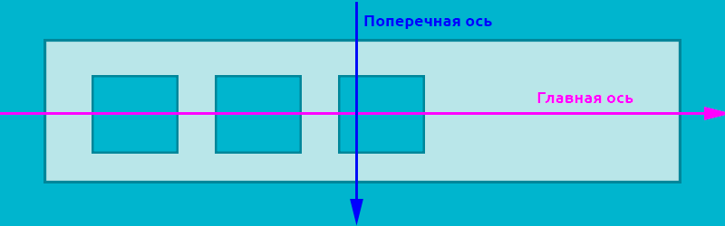
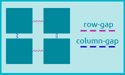

<div class="container">
<div class="item1"></div>
<div class="item2"></div>
<div class="item3"></div>
<div class="item4"></div>
</div>
.container {display: flex}
Когда мы задаём какому-то элементу значение flex для свойства display, мы превращаем этот элемент в флекс-контейнер. Внутри него начинает действовать флекс-контекст, его дочерние элементы начинают подчиняться свойствам флексбокса.
.container {display: inline-flex}
Когда мы задаём какому-то элементу значение flex для свойства display, мы превращаем этот элемент в флекс-контейнер. Внутри него начинает действовать флекс-контекст, его дочерние элементы начинают подчиняться свойствам флексбокса.
Флекс-контейнер: элемент, к которому применяется свойство display: flex. Вложенные в него элементы подчиняются правилам раскладки флексов.
Флекс-элемент: элемент, вложенный во флекс-контейнер.
Основная ось: основная направляющая флекс-контейнера, вдоль которой располагаются флекс-элементы.
Поперечная (побочная, перпендикулярная) ось: ось, идущая перпендикулярно основной. оси
Flex-direction -свойство управления направлением основной и поперечной осей.
.container {flex-direction: row;} -значение по умолчанию
Возможные значения:
row
row-reversed
column
column-reverse
Flex-wrapперенос элементов внутри контейнера.
.container {flex-wrap: nowrap;} - значение по умолчанию
Установив значение wrap, мы можем изменить это поведение, и флекс-элементы будут иметь возможность перенестись в новый ряд, если не влезают в одну линию в рамках родителя. Ещё одно возможное значение — wrap-reverse. В этом случае элементы будут располагаться снизу вверх, заполнив собой сперва нижний ряд, а те, что не влезли, перепрыгнут в ряд выше.
wrap
nowrap
wrap-reverse
Flex-flow - это свойство-шорткат для одновременного определения значений свойств flex-direction и flex-wrap.
.container { display: flex; flex-flow: column wrap; }
Justify-content - свойство позволяет выравнивать флекс-элементы внутри флекс-контейнера по основной/главной оси (по горизонтали).
.container {justify-content: flex-start} - значение по умолчанию
Возможные значения:
flex-start
flex-end
center
space-between
space-around
space-evenly
Align-items - свойство выравнивания элементов внутри контейнера по поперечной оси (по вертикали).
.container {align-items: stretch} - значение по умолчанию
Возможные значения:
strtech
flex-start или start
flex-end или end
center
baseline
Gap - c помощью этого свойства можно с лёгкостью задавать отступы между строками и столбцами (между элементами). Является краткой записью свойств row-gap и column-gap.
Может иметь одно или два значения. Если указано только одно, то column-gap автоматически равен row-gap. Если указаны два значения, то первое будет задавать отступы между рядами (row-gap), а второе — между колонками (column-gap).
Order - меняет порядок отображения флекс-элементов внутри флекс-контейнера.
По умолчанию элементы отображаются в том порядке, в котором они расположены в разметке, а значение свойства order равно 0. Значение задаётся в виде целого отрицательного или положительного числа. Элементы встают по возрастающей.
.order1 {order: 5}
Flex-grow - указывает, может ли вырастать флекс-элемент при наличии свободного места, и насколько.
По умолчанию значение равно 0. Значением может быть любое положительное целое число (включая 0). Если у всех флекс-элементов будет прописано flex-grow: 1, то свободное пространство в контейнере будет равномерно распределено между всеми. Если при этом одному из элементов мы зададим flex-grow: 2, то он постарается занять в два раза больше свободного места, чем его соседи.
.item {flex-grow: 2}
Flex-shrink - полностью противоположно свойству flex-grow. Если в контейнере не хватает места для расположения всех элементов без изменения размеров, то свойство flex-shrink указывает, в каких пропорциях элемент будет уменьшаться.
Чем больше значение у этого свойства, тем быстрее элемент будет сжиматься по сравнению с соседями, имеющими меньшее значение. Значение по умолчанию — 1. Значением может быть любое целое положительное число (включая 0).
Align-self - выравнивает флекс-элементы текущей строки.
Отвечает за выравнивание отдельно взятого flex-элемента по высоте flex-контейнера. Переопределяет выравнивание, заданное align-items.
Возможные значения:
1,2,4 - align-items:flex-start, 3 - align-self: stretch;
1,2 - align-items:end, 3 - align-self: flex-start;